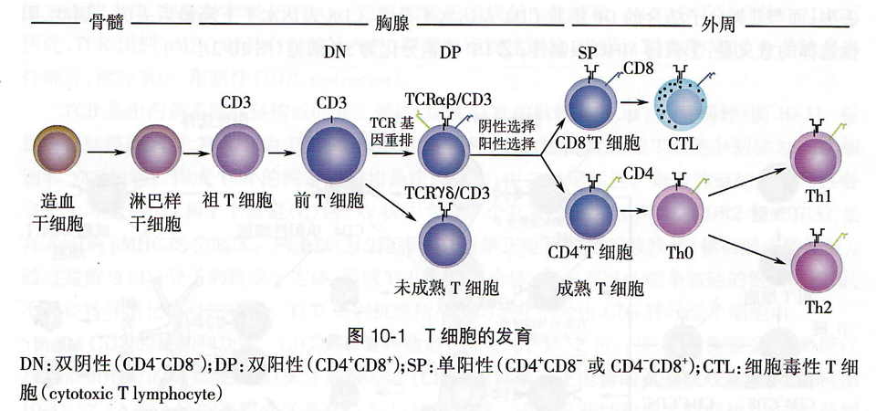
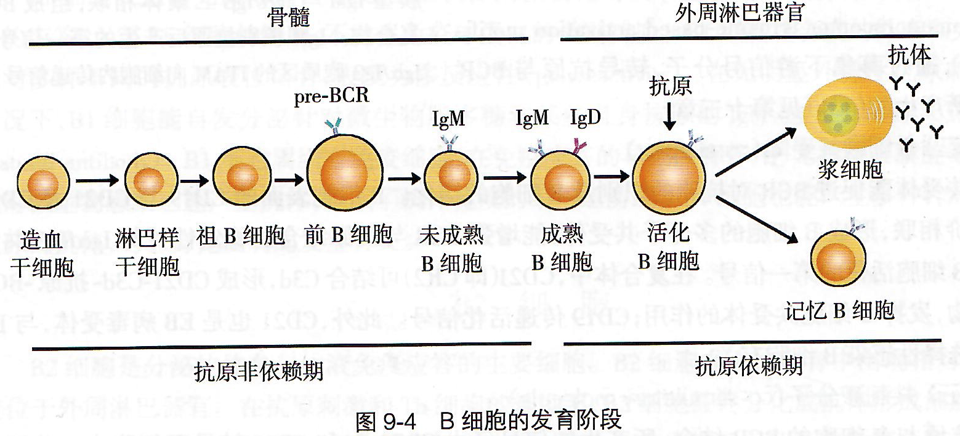

感染与免疫
7.1 影响人体健康的主要病原体
病毒
类型：RNA病毒，DNA病毒
主要作用方式：
- 破坏细胞功能/重要脏器细胞
- 整合病毒基因至宿主细胞
真菌
分类：单细胞，多细胞
绝大数对人类有益，少数对人类有害
寄生虫
分类：原生动物（单细胞真核），蠕虫（多细胞）
细菌
除了核糖体外无其他细胞器
广义细菌：细菌，放线菌，支原体，衣原体，立克次体，螺旋体
支原体
最小最简单的细胞，以二分裂和出芽繁殖
7.2 免疫系统
免疫系统的组成
免疫系统的分类
免疫细胞的生成
也就是造血过程
-
髓系细胞
- 粒细胞：中性粒，嗜碱性粒细胞，嗜酸性粒细胞
- 单核/巨噬细胞
- 树突细胞
-
淋巴系细胞
- T淋巴细胞：CD4 T细胞（helper），CD8 T细胞（cytotoxic），用特有的膜蛋白命名
 - B淋巴细胞：记忆细胞，浆细胞，在成熟过程中出现区别

- T淋巴细胞：CD4 T细胞（helper），CD8 T细胞（cytotoxic），用特有的膜蛋白命名
- NK细胞（natural killer）
淋巴细胞关系图

克隆选择学说
全身的免疫细胞由众多识别不同抗原的细胞克隆而成，同一种细胞表达相同的受体
受体在接触抗原之前就形成，由长期的进化得到
当自身组织的抗原在胚胎期被相应的细胞克隆，这些细胞产生特异性免疫耐受，用于判断自我和非己
抗原进入身体后，免疫细胞从细胞库中选择能识别这种抗原的淋巴细胞，清除抗原

抗原提呈细胞
能加工抗原并以抗原肽-MHC分子复合物的形式提呈给T细胞的细胞
主要是树突状细胞（DC）
重要的免疫分子
-
抗原：免疫原性，免疫反应性
抗原表位：决定免疫应答特异性的化学基团 - 抗体：轻链比较关键

7.3 免疫系统对病原体的识别
模式识别受体
能够直接识别病原体等表面特定分子的受体
病原体相关模式分子
可以被模式识别受体识别的特定分子
7.4 抗原的加工和提呈
加工
抗原被降解为多肽，与MHC结合形成抗原肽-MHC分子复合物，随后被转运到细胞表面
提呈
APC（加工提呈细胞）表面的抗原肽-MHC分子复合物被T细胞识别，提呈给T细胞，诱导其活化
7.5 淋巴细胞的免疫应答
T细胞特异性识别抗原
APC通过免疫突触与T细胞相互作用（呈递抗原）
T细胞活化、增殖、分化
只有当没有负性信号，有正性信号和抗原信号时，才会活化
效应T细胞的产生和效应
7.6 免疫系统的功能
-
免疫防御：防止外界入侵，清除异己
过强或持续太久：过敏反应
过弱：免疫缺陷 -
免疫监视：发现和清除病原体，肿瘤细胞，衰老、凋亡的细胞等
过弱：肿瘤，持续性病毒感染等 - 免疫自身稳定：通过自身免疫耐受和免疫调节，达到免疫系统内环境的稳定
免疫系统与神经系统和内分泌系统一起组成神经-内分泌-免疫网络